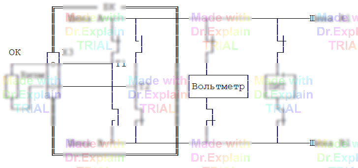

5.2.3 Команда ЭТ (проверка в режиме Электронной 4‑х Точки)
Команда ЭТ выполняет проверку цепей на сообщение, используя двухточечную схему измерения. Проверяемые цепи задаются в формате ССИРТ. В команде используется цифровой вольтметр, плата ПИТ (входит в состав АЦП) и двухпроводная схема измерения.
Синтаксис
<метка> ЭТ [<диапазон>] [<режимы>] <список_цепей_ССИРТ>
Ключи
Д— учесть суммарное сопротивление проводов;
Пример
230 ЭТ 10<Ом<15, 0.05А, 100мс *ССИРТ*
Погрешности измерения
| Диапазон, R | Погрешность |
|---|---|
| 0.01 Ω ≤ R < 0.1 Ω | не определена |
| 0.1 Ω ≤ R ≤ 1 Ω | ±0.05 Ω |
| 1 Ω < R ≤ 100 Ω | ±5 % |
Режимы контроля
- Ток обтекания — выбирается из ряда 10, 20, 50, 100 мА;
- Время выдержки (см. п. 4.3.4) — от 1 до 99 990 мс;
Примечание. Если не указать в команде режимы контроля, автоматически выбираются: при R ≤ 1 Ω: U=10 В, I=50 мА; при R > 1 Ω: U=10 В, I=10 мА.
Учёт сопротивления проводов
Допускается указать суммарное сопротивление проводов соединителя (0.001 Ω…1 кΩ), которое при измерении будет вычитаться из результата. По умолчанию — 0 Ω.
